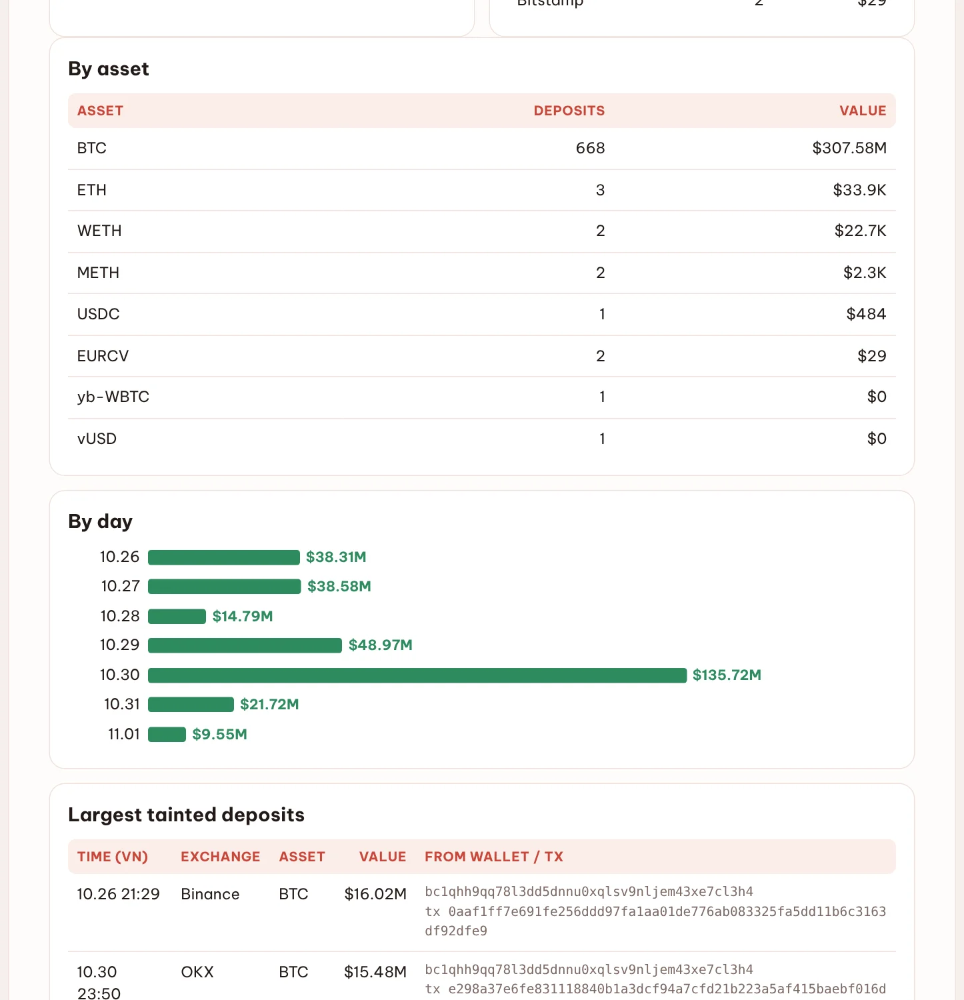
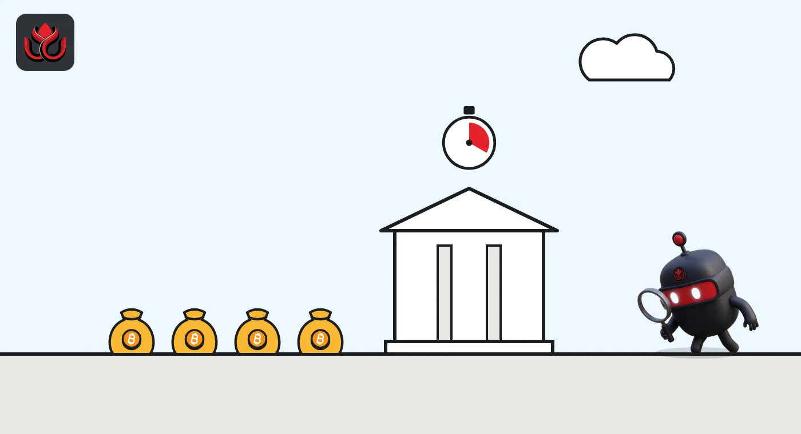

$307 million in hack-linked bitcoin hit exchanges in one week. OKX got the biggest share
DeepSea counted 680 deposits of tainted funds into exchanges from October 26 to November 1, nearly all in BTC. OKX took $139.96 million in just 55 of them, including a run of near-identical $15.47 million transfers.
Key points
- DeepSea counted 680 tainted deposits worth $307.64 million reaching exchanges from October 26 to November 1, 2026. BTC made up $307.58 million of it.
- OKX received $139.96 million in 55 deposits, Binance $88.38 million in 270 and Bybit $50.23 million in 265.
- October 30 was the peak day at $135.72 million. DeepSea does not name the incident, listing it only as a tracked incident.
 What DeepSea's data shows
What DeepSea's data shows
DeepSea's weekly report for October 26 to November 1, 2026 has a Hack watch page that follows money from tracked thefts. This week it counted 680 deposits worth $307.64 million landing at exchange deposit addresses. It traced 5,734 wallets across 8 incidents and is still tracking 1,152 of them.
Almost all of it was bitcoin: 668 BTC deposits worth $307.58 million. The other 12 deposits, about $59,000 in total, were small amounts of ETH, WETH, METH, USDC and other tokens. All 680 deposits sit under one line that DeepSea labels only "Tracked incident," so we do not name a hack here.

Data: DeepSea (desea.io), checked November 3, 2026, 6:30 p.m. ET.
Where the money went
OKX took the most value from the fewest transfers: $139.96 million in 55 deposits, or about $2.5 million each on average. Binance received $88.38 million in 270 deposits and Bybit $50.23 million in 265. Kraken got $16.97 million (32 deposits), Crypto.com $7.22 million and Gate $4.81 million, DeepSea shows.
A deposit address is the account an exchange gives a user to receive coins. Funds that reach one can be traded, sold or frozen by the exchange.
Hack-linked deposits by exchange, October 26 to November 1
US$ million
Source: DeepSea weekly report, Hack watch.
One day, one pattern
Deposits ran at $38.31 million on October 26 and $38.58 million on October 27, then jumped to $135.72 million on October 30, by DeepSea's daily count. By November 1 the pace had slowed to $9.55 million.
The biggest transfers repeat. Between about 11:44 a.m. and 12:50 p.m. ET on October 30, DeepSea lists four BTC deposits to OKX of $15.47 million to $15.48 million each. Three came from one Bitcoin wallet whose address begins bc1qhh9q, and one from a second wallet. The largest single tainted deposit of the week, $16.02 million, went from the same bc1qhh9q wallet to Binance at 10:29 a.m. ET on October 26 (DeepSea lists times in Vietnam time; we converted them).
Who controls that wallet is unknown. In an early October DeepSea data file, the same address shows up as a large BTC depositor to Gate with the behavior tag "Service / exchange wallet (very high activity)." DeepSea does not say who controls it, so we do not treat it as the thief's wallet.

Why it matters
Stolen coins are hard to spend until they reach an exchange or a swap service. Each tainted deposit is a chance for an exchange to freeze funds. DeepSea's risk database, which flags scam, hack and sanctioned addresses, grew by 1,178 this week to 32,175 addresses, with 1,127 of the new ones tagged hack-tainted.
LC Insight analysis
This section is our reading of the facts above, not a statement of fact.
- The four near-identical $15.47 million deposits into OKX within about an hour stand out in this week's data. DeepSea's data does not show who sent them or why.
- Because DeepSea tags the busiest source wallet as a high-activity service wallet, some of this $307.64 million may be coins passing through intermediaries. Taint here means a link to a tracked incident, not proof of who owns the funds.
- Any freezes would normally be announced by the exchanges themselves. DeepSea's report does not mention any freeze tied to these deposits.
What's next
- Whether OKX, Binance or Bybit report freezes tied to these deposits
- Whether DeepSea names the tracked incident in its Hacks list
- Next week's tainted deposit total versus $307.64 million
- Growth of DeepSea's risk database past 32,175 addresses
Disclaimer. This article is based on public information and the sources listed below as of the update time shown. It is for information only and is not investment, legal or tax advice. Figures may change as companies and authorities publish new data.
Sources
- DeepSea, Weekly Smart Money & Global Money Flows Report, October 26 to November 1, 2026 (Hack watch; checked November 3, 2026)
- DeepSea data file j1.json, BTC large depositors table (data as of October 3, 2026; checked November 3, 2026)
- mempool.space, OKX deposit of about $15.47 million, October 30, 2026
- mempool.space, $16.02 million deposit to Binance, October 26, 2026